圓ちゃんと池袋の水族館に行ってきました。
池袋のサンシャイン水族館で超かぐや姫コラボをやっていたので一緒に行こうということで、行ってきました。
5時くらいに池袋駅に集合だったので2時くらいに池袋に着いて池袋の本屋さんで本を漁ってました。
（ここに篠澤広）
池袋につくと篠澤広たちがお出迎えしてくれました。
嬉しい❀.(*´▽`*)❀.
どうやら棒付きキャンディー（有名なのかな?）とコラボしてるみたいです。
元気をもらっていざ出発。目的地はジュンク堂です。
電気通信大学でオススメしてもらった数学の本がどんな感じの本なのかを確かめたかったので実際に見てみました。
わかりやすく解説してくれている本なので買うことに。
ジュンク堂は普段見ることのないであろう専門書とかがたくさん置いてあるのでオヌヌメでっせ
医学書とか化学の本とかDTMとかプログラミングとかその他諸々たくさんの種類があって楽しかった(*´꒳`*)
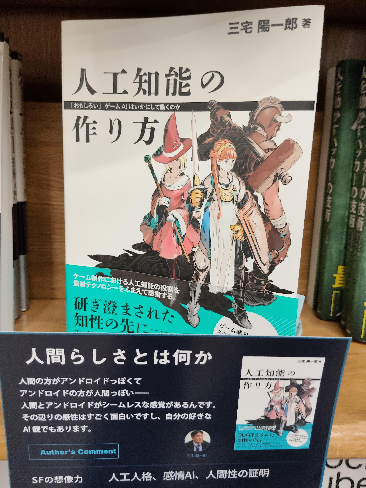
この本はゲーム内の人工知能をどうやって作るかが書いてあった。
昔のゲームにもCPU対戦的なものがあって初代マリオカートとかのCPUの作り方が書いてあった。
自分のやりたい対話型のAIでなかったので買いはしなかったけれど面白い本だと思いました。
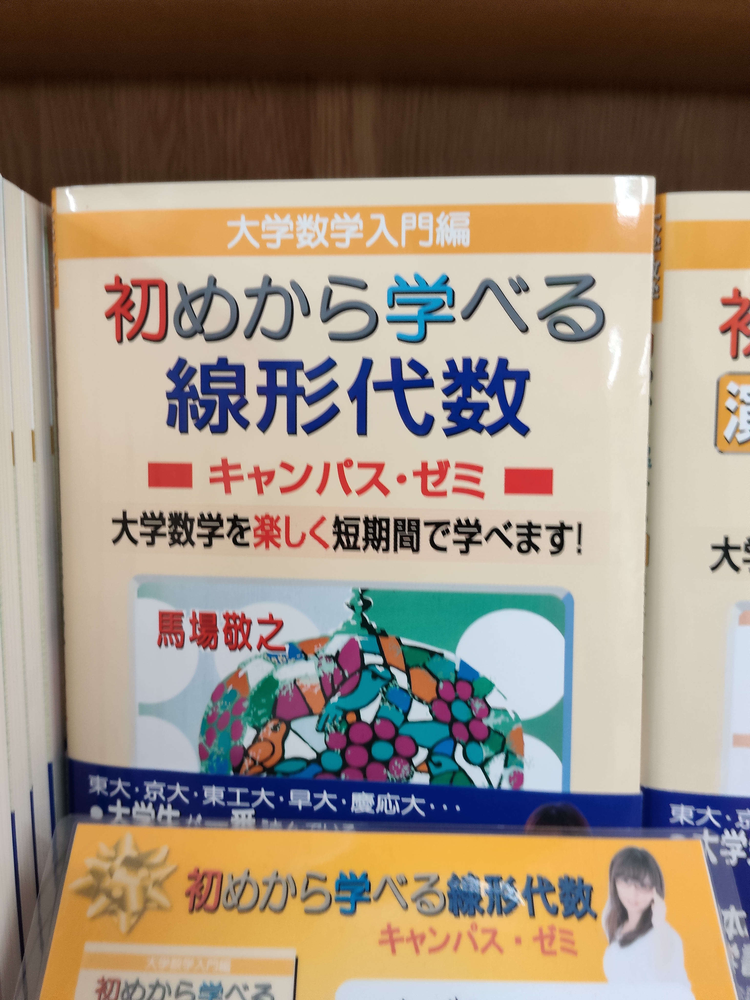
やっぱりやるなら線形代数だということで一番簡単な本を見てきました。
やはり早く微積やりたい。
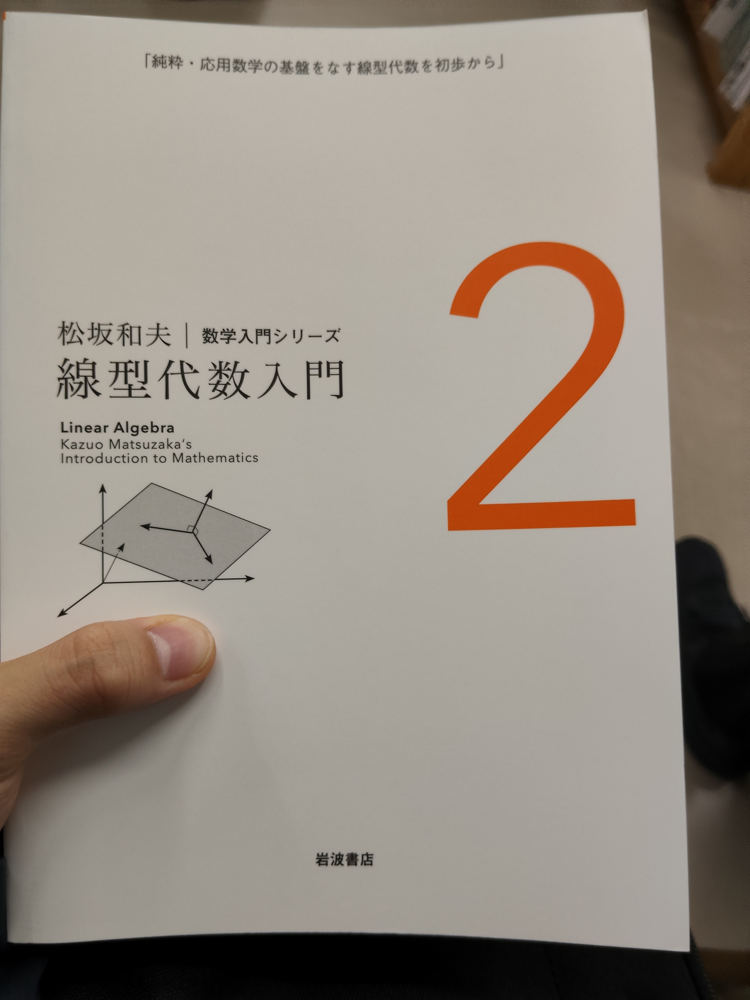
電気通信大学の教授にお勧めしてもらった本を見てきました。
基礎の基礎から復習してくれる本で難しそうで分厚かったですが買うことに。
やってる時間なんて言うものはないですけど、ちょくちょく開くくらいで許して、、、
(謝罪´Д｀)ノ*+:。.。:+*オユルシクダサイ*+:。.。:+*
そんなこんなで立ち読みしてたら時間が来てしまってかなーり焦りましたけど、無事に時間に間に合って集合
早速水族館に行くことにコラボは7時からなので2時間くらいゆっくり中を見ることができました。
ガンダムベースとは違い昔と変わらずの展示で安心_ﾖｶｯﾀε-(´∀｀*)
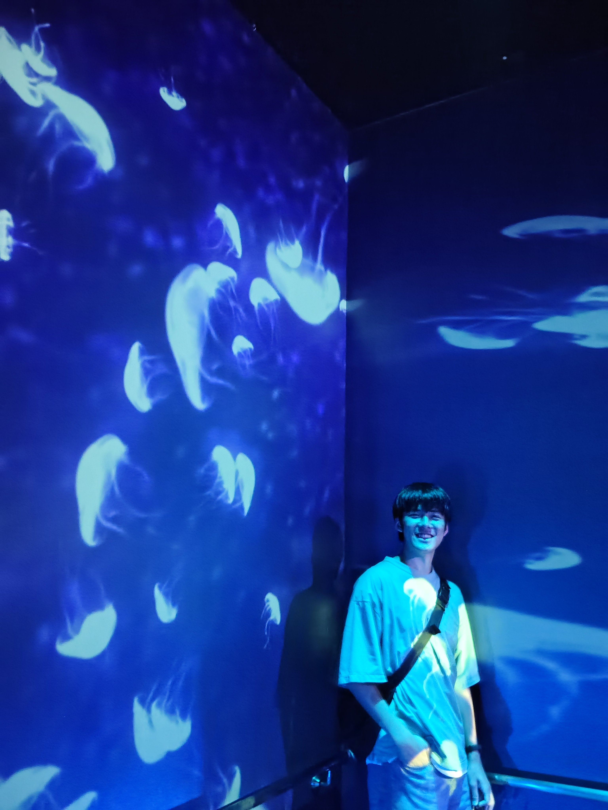
二階に上がるときにプロジェクターでクラゲが映し出されていたので綺麗だったから取りました。
圓ちゃんカッコイイ______ｷﾀ━━━(ﾟ∀ﾟ)━━━!!!!
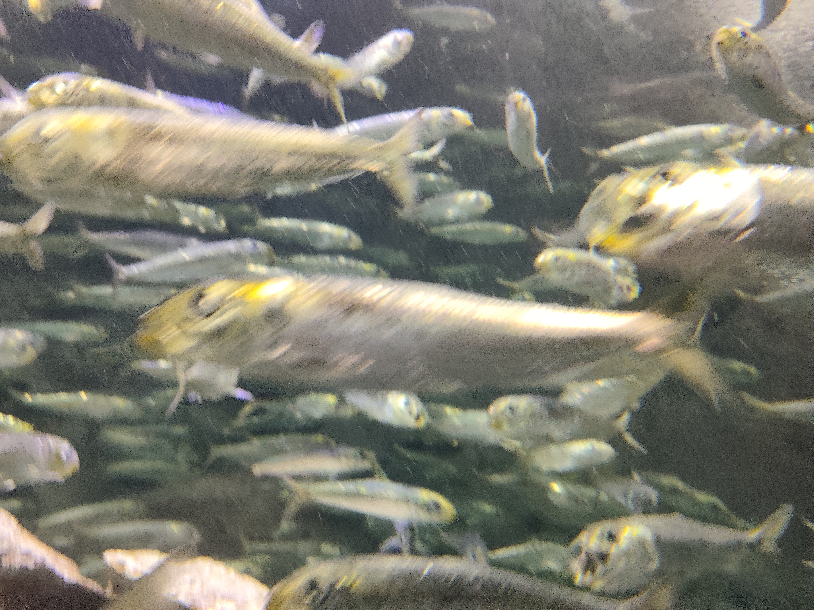
ブレブレのイワシ。イワシがくるくるしてて見ていて気持ちい。
よくこんなにきれいに回れるよね
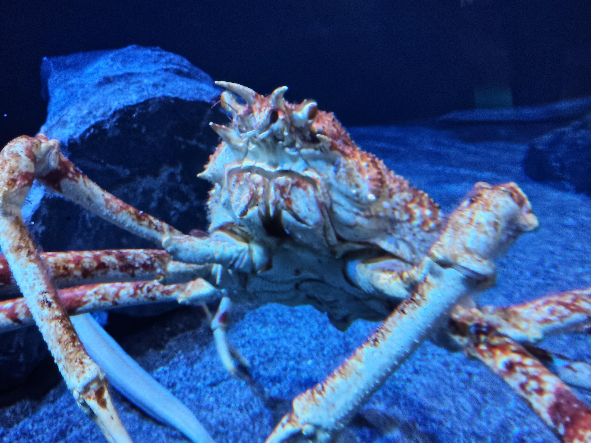
昔からずっといるタカアシガニさんです。
タカアシガニってまずいらしいですよ。嘘か真かは知りませんが祖父が言っていたらしいです。
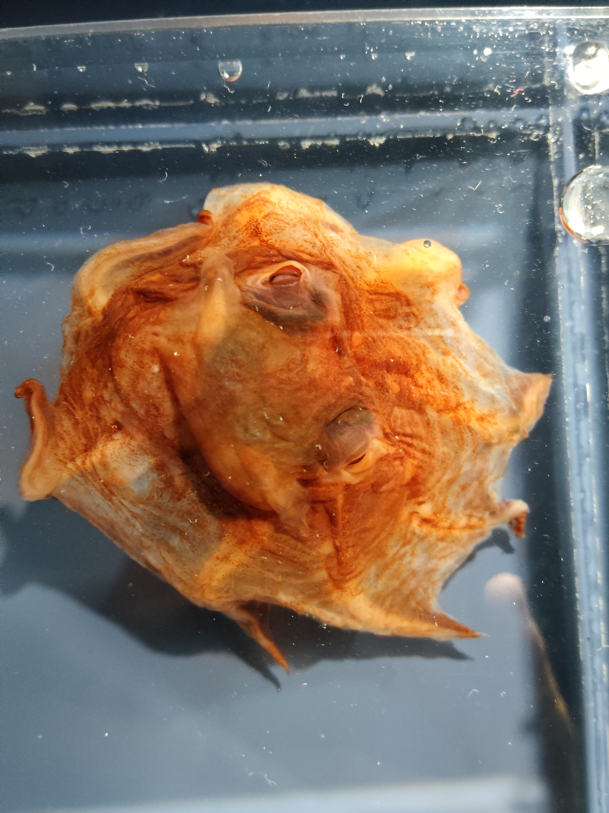
私たちのやっているバンド名はここから来ました。
みんなが名前の候補を全く言い出さないから自分が一番最初にネタとしてあげたメンダコになりました。
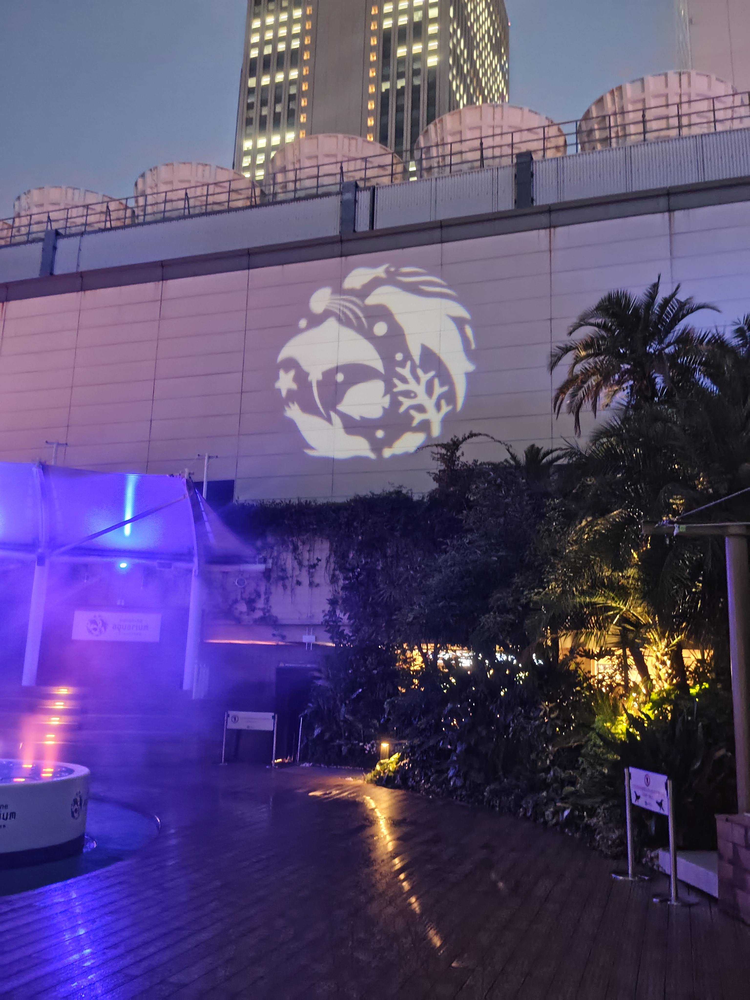
ロゴ綺麗
帰りにアニメイトによって解散しました。
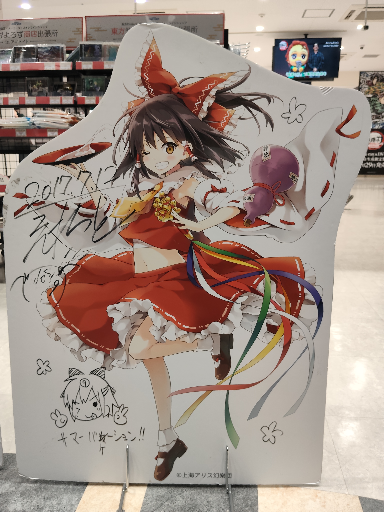
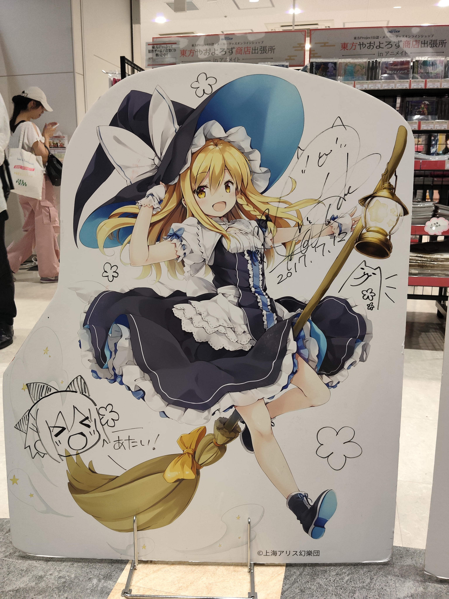
紅魔郷リリースおめ
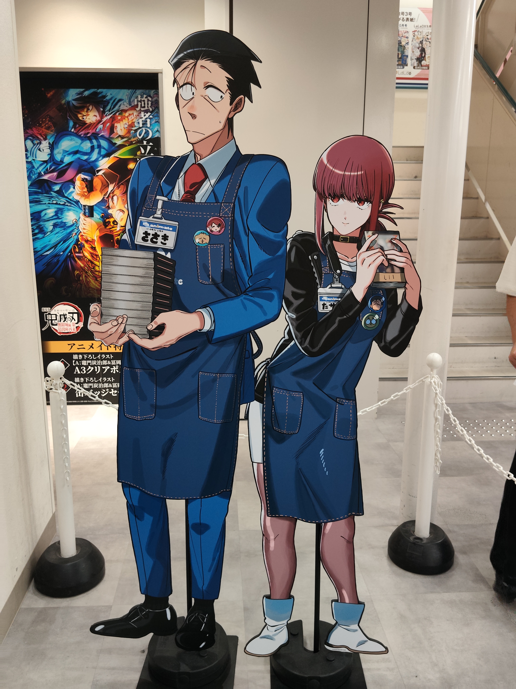
やにすうおすすめです。